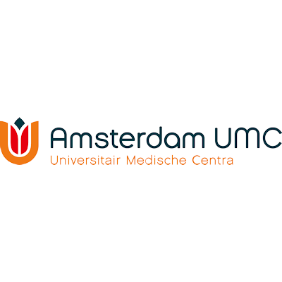
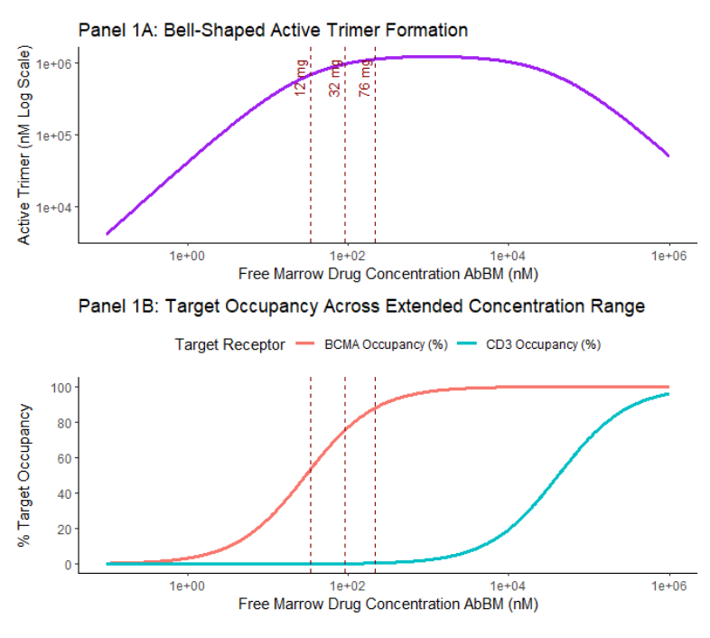

01
Model-informed precision dosing in oncology

Master research project investigating model-informed precision dosing in oncology, combining clinical drug concentration data, population pharmacokinetic modelling, quantitative systems pharmacology and simulation.
Application
Dose optimisation · personalised medicine
Methods
Population PK · QSP · simulation · trial design
Tools
R · nlmixr2 · rxode2 · NONMEM
